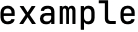

article
Building a styled string with NeonSign
NeonSign provides a powerful declarative syntax for building styled strings. Use this tutorial to learn the basics.
Start with styled()
The powerful styling methods in NeonSign are all offered through the
StyledString abstract base class. To use those styling
methods to style your Python string, you’ll need to convert your string to a
StyledString object first, using the styled() function:
from neonsign import styled
styled('example')
Renders as:

The styled string created above doesn’t have any styles applied yet. When printed, you’ll see the word “example” on the terminal as it usually appears.
To add a style, call one of the styling methods, such as
bold():
from neonsign import styled
styled('example').bold()
Renders as:
You can add multiple styling methods to combine their effects:
from neonsign import styled
styled('example').bold().italic().underlined()
Renders as:
Composing complex styles
You can pass more than one items to styled() function. Each item
must be either a plain Python string or another styled string:
from neonsign import styled
styled(
'Hello',
styled('World').italic().underlined()
).bold()
Renders as:
Here, a complex styled string is created. It consists of:
The word “Hello” without any styles, followed by
The word “World” that is underlined and italic.
Both words are in bold.
There are two usages of styled() in this example. The inner one applies its
styles to the word “World” only, while the outer one applies its styles to both
“Hello” and “World”.
With this powerful composable API, you can group many levels of styled strings to create complex designs.
Example: Multicolored text with background
from neonsign import styled, Colors
print(
styled(
styled(' Hello').color(Colors.BRIGHT_YELLOW),
styled('World ').color(Colors.BRIGHT_BLUE)
)
.background(Colors.BRIGHT_GREEN)
.bold()
)

Example: Blinking text
from neonsign import styled, Colors
print(
styled(' Hello, world! ')
.color(Colors.BRIGHT_WHITE)
.background(Colors.BRIGHT_BLUE)
.bold()
.blinking()
)

Example: Color-coded logger messages
from neonsign import styled, Colors
print(
styled(
styled(' INFO ')
.color(Colors.BLACK)
.background(Colors.BRIGHT_WHITE)
.bold(),
' ',
'An example message'
)
)
print(
styled(
styled(' WARN ')
.color(Colors.BLACK)
.background(Colors.BRIGHT_YELLOW)
.bold(),
' ',
styled('An example message').color(Colors.YELLOW)
)
)
print(
styled(
styled(' ERROR ')
.color(Colors.BRIGHT_WHITE)
.background(Colors.BRIGHT_RED)
.bold()
.blinking(),
' ',
styled('An example message').color(Colors.RED)
)
)

See Also
|
Converts a string to a styled string object or creates a group of strings that can be styled together. |
A string associated with display styles. |